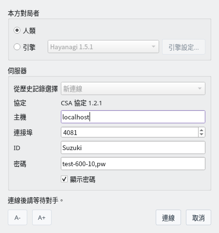
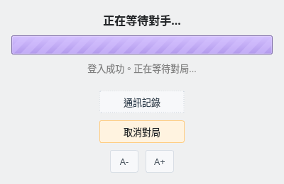
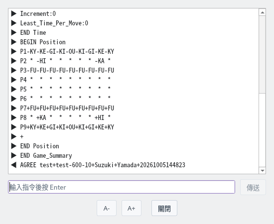
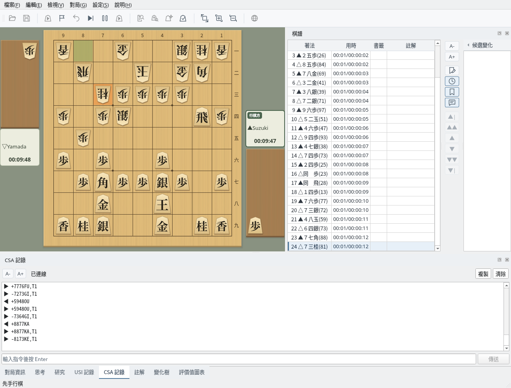
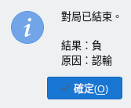

與支援 CSA 協定的伺服器進行網路對局
截圖於 Linux 上以繁體中文介面擷取。
設定伺服器與本方對局者
選擇「對局」→「網路對局 (CSA)…」開啟網路對局對話方塊。僅在沒有進行對局或解析時可用。
| 本方對局者 | 自己下棋時選擇「人類」，讓 USI 引擎下棋時選擇「引擎」。引擎從「設定」→「引擎設定」中註冊的引擎裡選擇，按一下「引擎設定...」可以變更選項。 |
| 從歷史記錄選擇 | 選擇以前連線過的伺服器（最多 10 個），會填入主機、連接埠和 ID。 |
| 協定 | 使用 CSA 協定 1.2.1 連線。 |
| 主機、連接埠 | 伺服器的主機名稱或 IP 位址，以及連接埠（預設 4081）。 |
| ID、密碼 | 登入伺服器的 ID 與密碼。密碼不會儲存到設定檔中。 |
有未填寫的項目時，對話方塊下方會顯示「請輸入主機位址。」等提示，「連線」按鈕無法按下。主機、ID 與密碼中不能包含空格。

網路對局對話方塊：以人類身分連線到本機 shogi-server 的設定
用時等對局條件由伺服器決定，ShogiBoardQ 中沒有相應設定。使用 shogi-server 時，在密碼欄輸入「對局名,密碼」，以相同對局名登入的兩人進行對局。
| 對局名 | 格式為「名稱-用時-讀秒」，時間以秒為單位。例如 test-600-10 表示用時 10 分鐘、讀秒 10 秒 |
| 加時（費雪制） | 在結尾加 F，則每走一步加時，而不是讀秒。例如 test-300-10F |
| 希望先手或後手 | 在對局名後加 -B（先手）或 -W（後手）。例如 test-600-10-B,pw |
在自己的電腦上執行 shogi-server 時，主機填 localhost，連接埠填 4081。
登入伺服器並等待對手
按一下「連線」會開啟等待視窗，依序進行連線伺服器、登入與等待對手。如果有未儲存的棋譜，會先確認是否捨棄。
找到對手後，伺服器送來對局條件，ShogiBoardQ 自動同意並開始對局。按一下「取消對局」可以停止等待並登出。

等待畫面：登入成功，正在等待對手
按一下「通訊記錄」會開啟顯示與伺服器收發內容的視窗。▶ 表示接收的行，◀ 表示傳送的行，LOGIN 的密碼顯示為「*****」。
連線期間可以在下方輸入指令，按 Enter 或按一下「傳送」傳給伺服器。記錄最多保留 5000 行。

通訊記錄：收到對局條件（Game_Summary）並以 AGREE 同意
在與一般對局相同的畫面中下棋
以人類身分對局時，輪到自己時按一下棋盤上的棋子下棋。對手的著法由伺服器送來並反映到棋盤上，棋譜欄記錄每步著法與用時。對局時鐘顯示伺服器送來的用時。
畫面下方的「CSA 記錄」分頁可以查看收發內容與連線狀態。「複製」複製整個記錄，「清除」清除顯示，也可以從輸入欄傳送指令。「對局資訊」分頁記錄對局者姓名與伺服器的用時。

對局中：一邊在 CSA 記錄分頁查看與伺服器的收發一邊對局
把本方對局者設為「引擎」後，引擎依伺服器的用時自動下棋。思考、USI 記錄與評價值圖表也與一般對局一樣顯示。
選擇「對局」→「立即落子」可以中止引擎的思考，讓它下出目前的最佳著法。引擎認輸時向伺服器傳送認輸，引擎入玉宣言時向伺服器傳送宣言。
輪到自己時，選擇「對局」選單中的「認輸」「中斷」「入玉宣言」會傳送給伺服器。入玉宣言在確認後傳送。對手回合時無法傳送。
勝負、超時以及入玉宣言是否成立由伺服器判定。即使畫面上的時鐘歸零，在伺服器通知終局前對局仍會繼續。不支援中斷的伺服器（如 shogi-server）可能把中斷判為犯規。
對局結束後會顯示結果與原因，棋譜欄記錄終局（如「▲認輸」）。棋譜不會自動儲存，需要保留時請從「檔案」選單儲存。終局後可以重播棋譜，或開始下一局網路對局。
對局中斷線，或引擎無法回傳著法時，對局以「中斷」結束。

終局：結果「負」，原因「認輸」
可以在支援 CSA 協定的伺服器上進行網路對局